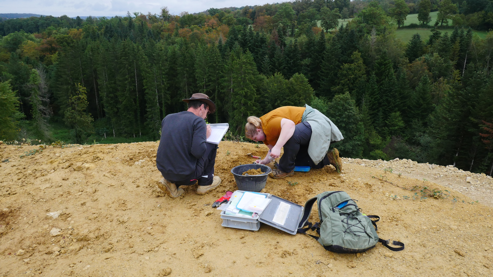
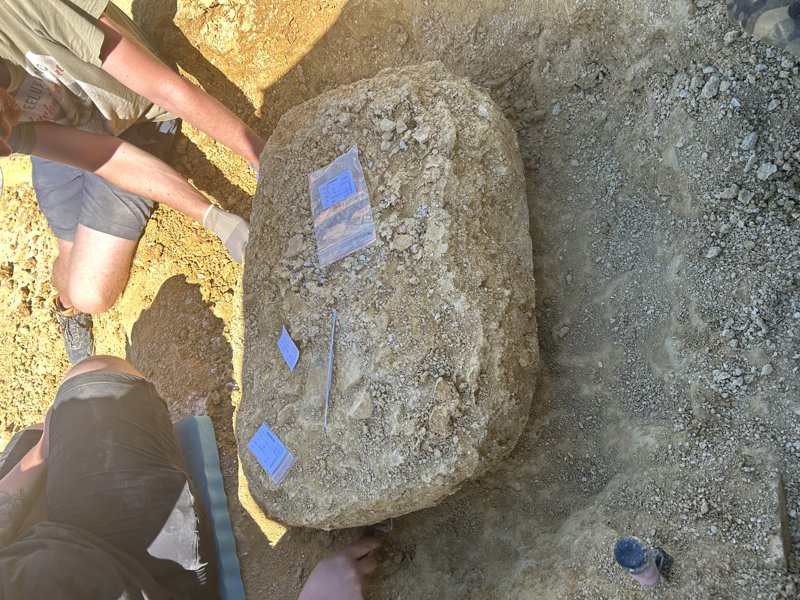
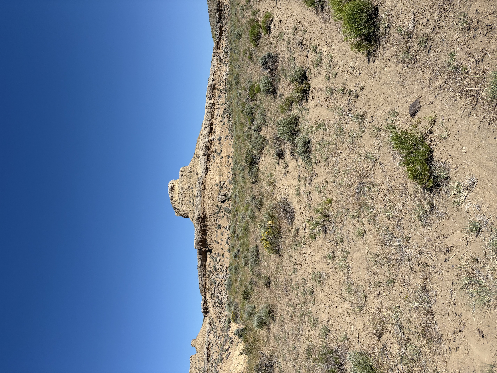
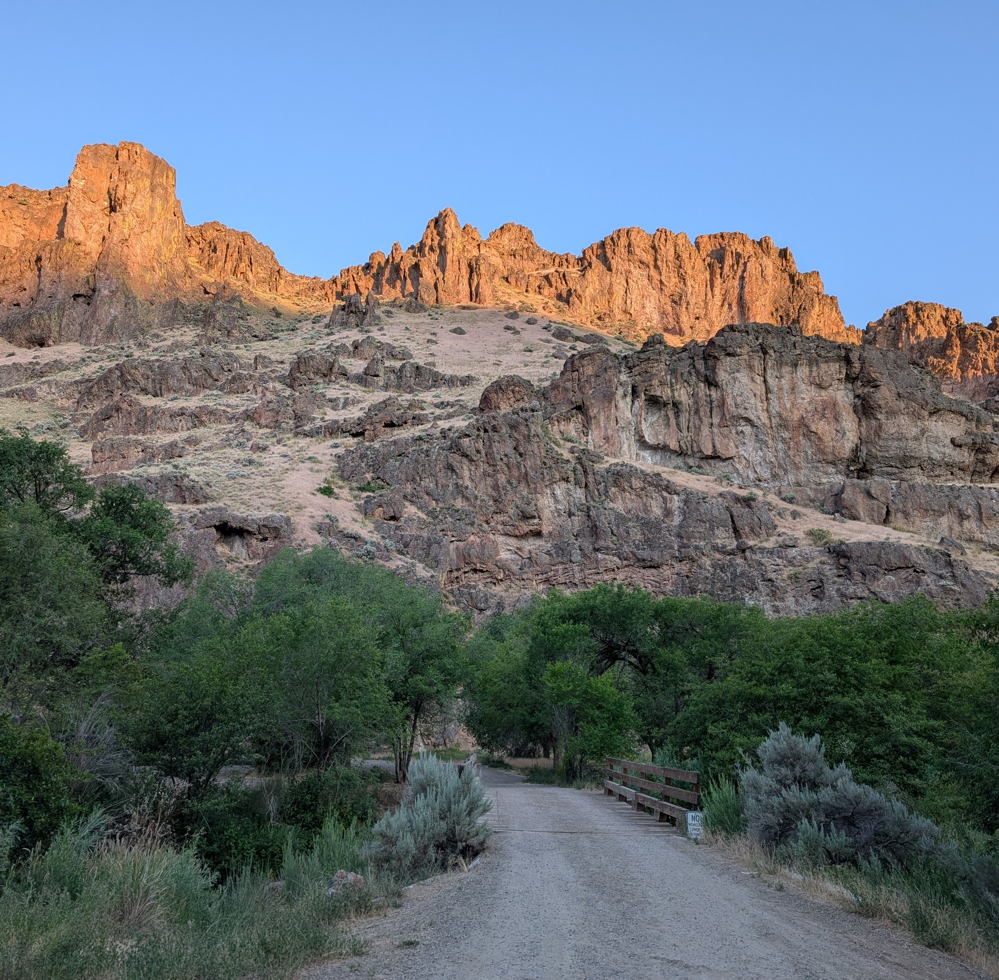
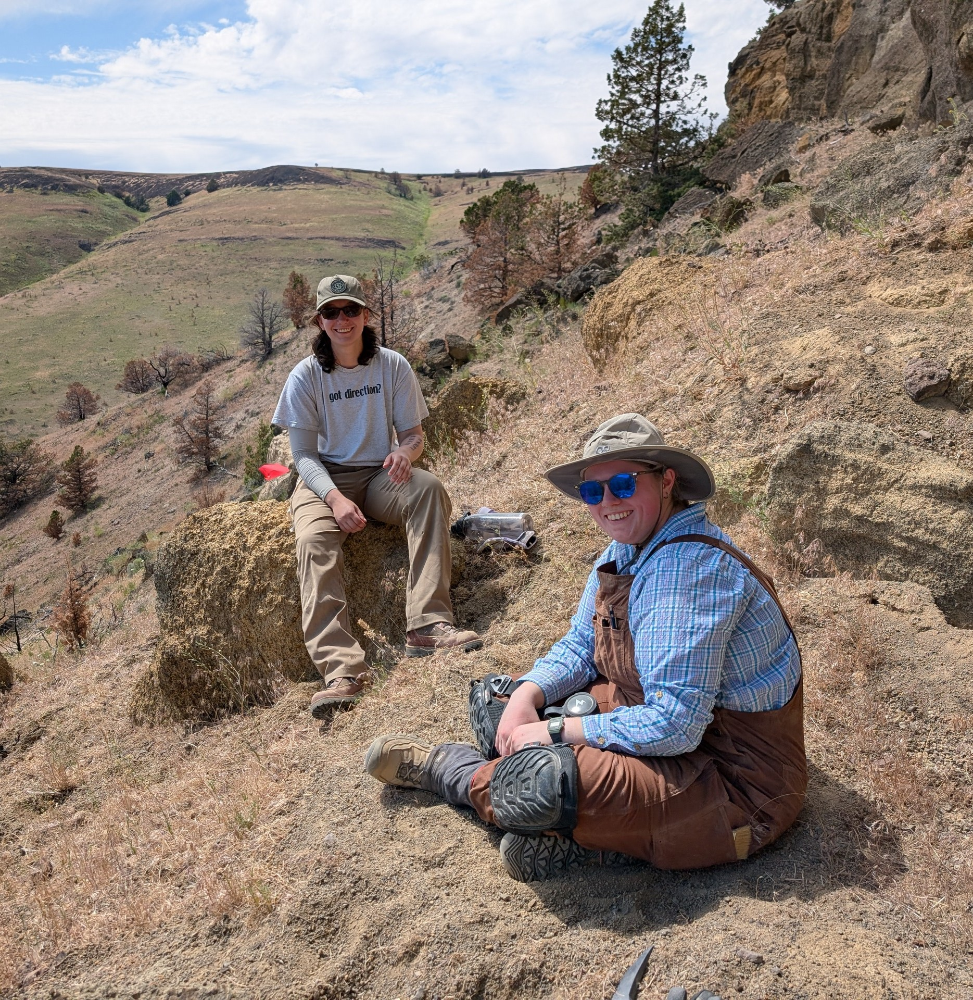
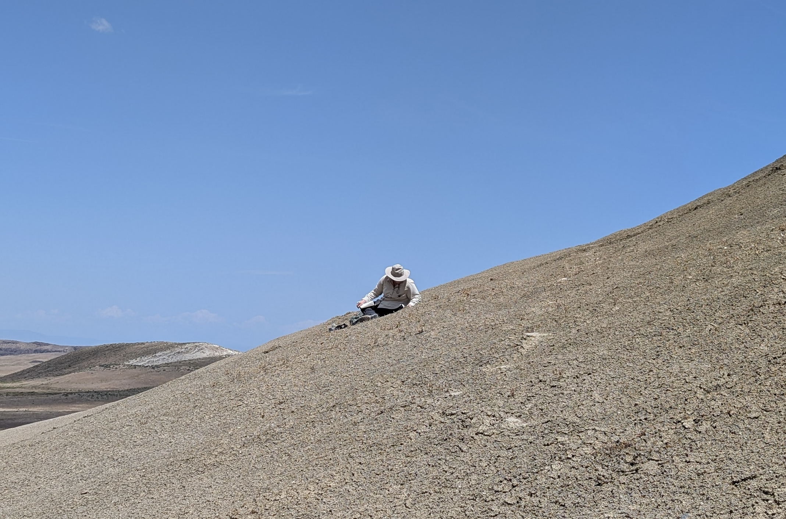

-
2026
John Day & Eastern, OR, USA Participated in paleontological fieldwork in the Arikareean deposits of the John Day Formation, Barstovian deposits of the Butte Creek Volcanic Sandstone and Mascall Formations, Clarendonian deposits of the Juntura and Ironside Formations, and the Hemphillian deposits of the Rattlesnake Formation.
-
2025
John Day & Eastern, OR, USA Participated in paleontological fieldwork in Arikareean deposits of the John Day Basin, Barstovian deposits of the Succor Creek Formation, and Hemingfordian deposits of Coglan Buttes, and led fieldwork in Barstovian deposits near Beatys Butte.
-
2025
Porrentruy, Switzerland, JURASSICA Museum Excavated actinopterygian, crocodylomorph, and testudinate fossils from the Kimmeridgian-aged deposits of the Reuchenette Fm.







